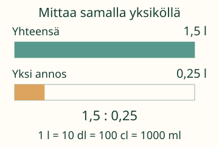
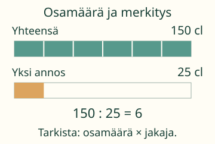
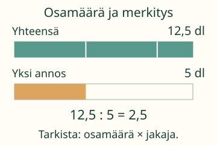
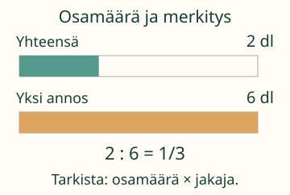

Aava mittaa 1,5 l mehua 0,25 l:n annoksina.
Laske annosten määrä.

Mieti ensin: Jos litrat kirjoitetaan senttilitroina, muuttuuko annosten määrä?
1 l = 10 dl = 100 cl = 1000 ml. Molemmissa määrissä käytetään samaa yksikköä. Pienemmässä yksikössä molempien lukuarvo suurenee.
Esimerkit ja selitykset
Sama määrä, pienempi yksikkö
1,5 l on 150 cl ja 0,25 l on 25 cl. Kuusi 25 cl:n annosta täyttää 150 cl:n määrän. Siksi 1,5 : 0,25 = 150 : 25 = 6.

Lukuina kirjoitettuna molemmat kerrottiin sadalla. Jos muuttaisit vain jakajan, 1,5 : 25 olisi eri lasku.
Jaettavan ei tarvitse muuttua kokonaisluvuksi
1,25 : 0,5 = 12,5 : 5 = 2,5. Jakaja muuttui kokonaisluvuksi. Jaettava saa yhä olla desimaaliluku: 12,5:tä ei saa pyöristää 13:ksi. Kaksi ja puoli annosta tarkistuu: 2,5 × 0,5 = 1,25.

Tulos voi olla osa annosta
0,2 : 0,6 = 2 : 6 = 1/3. Kokonaismäärä on kolmasosa yhdestä annoksesta. 0,33 on likiarvo, ei täsmälleen 1/3. Tässä saat vastata tarkalla murtoluvulla.

Sääntö: Kun jaettava ja nollasta poikkeava jakaja kerrotaan samalla positiivisella luvulla, osamäärä säilyy. Sama kertolasku kumoutuu jakolaskussa. Kymmenellä kertomista voi jatkaa, kunnes jakaja on kokonaisluku.
Kokeile itse
Voit vastata suoraan. Kuvaa tai apua saa käyttää.
Apua jakolaskuun
Nykyinen lasku: 1,5 : 0,25 = 150 : 25 = 6 annosta. Molemmat luvut kerrotaan luvulla 100. Tarkistus: 6 × 0,25 = 1,5.
Tehtävän alkuperäinen esimerkki
Alkuperäinen esimerkki 1,5 : 0,25: Kerro molemmat luvut sadalla: 150 : 25. Kuinka monta 25:n osaa mahtuu 150:een?
Kirjoita jakolasku tarvittaessa murtolukuna. Kerro molemmat luvut samalla kymmenpotenssilla. Sen jälkeen voit käyttää tuttua luonnollisella luvulla jakamista. Tarkista lopuksi kertomalla vastaus alkuperäisellä jakajalla. Pilkku tai piste käy. Samanarvoinen tarkka murtoluku käy, kuten 2/6 luvun 1/3 sijaan.
Lisähaaste: milloin tulos kasvaa?
Kun jaettava on positiivinen ja jakaja on nollan ja yhden välissä, tulos on jaettavaa suurempi. Vertaa 3 : 0,5 = 6, 3 : 1 = 3 ja 3 : 2 = 1,5. Nollalle tulos ei kasva: 0 : 0,5 = 0.
Jakaminen nollalla ei ole määriteltyä. Tulos ei ole nolla: 1,5 : 0 ei saa lukuarvoa. Myöskään 0 : 0 ei määrää yhtä osamäärää; se ei ole sallittu jakolasku.
Opettajalle ja ilman ruutua
Vuosiluokat 7–9. Esitietona on desimaaliluvun jakaminen luonnollisella luvulla. Murtolukujen jakorakenne on vahva tuki, ei uusi aloitusportti. Mallin kaksi palkkia ovat saman mitta-asteikon määrä ja annos; ne eivät ole kaksi eri kokonaista. Vaiheiden mittayksikkö vaihtuu litroista desi-, sentti- tai millilitroihin, mutta fyysiset määrät eivät muutu. Annos saa olla osittainen. Ruudun palkki ei mittaa oikeaa nestettä.
Ilman ruutua: piirrä 1,5 litraa kuvaava nauha ja kuusi 0,25 litran osaa. Kirjoita samat määrät ensin desilitroina ja sitten senttilitroina muuttamatta nauhojen pituuksia. Aikuinen voi näyttää saman mitta-astialla; itse mittaamisen tarkkuutta tämä sivu ei arvioi.
Harjoituksen luvut ovat 0–999, enintään kolme desimaalipaikkaa. Negatiiviset luvut ja vielä tarkemmat lähtöluvut ovat tämän pienen mallin ulkopuolella. Vastaus saa olla tarkka murtoluku. Kuva käyttää vain valmiita pieniä mallipareja: määrät 0–20 l ja positiivisella jakajalla osamäärä enintään 12. Suuria harjoituslukuja ei siirretä automaattisesti kuvaan. Teknisessä parserissa syöte on enintään 128 merkkiä, murtoluvun osat 24 numeroa ja desimaalin merkityksellinen loppu 12 paikkaa. Ylimääräiset nollat eivät muuta arvoa; rajaa ylittävää täsmällisyyttä ei pyöristetä oikeaksi.
Nopeuden muunnoksen kerroin 3,6 annetaan valmiina: kyse on jakolaskun siirrosta uuteen tilanteeseen, ei uuden yksikkötaidon aloitusportista. Paikallinen palaute on opetustukea, vastauksia ei tallenneta. Se ei osoita itsenäistä hallintaa, muistamista tai fyysistä mittaustaitoa.
Lähtökysymys: Miksi 4,5 : 0,9 ja 45 : 9 antavat saman tuloksen, mutta 4,5 : 9 ei?